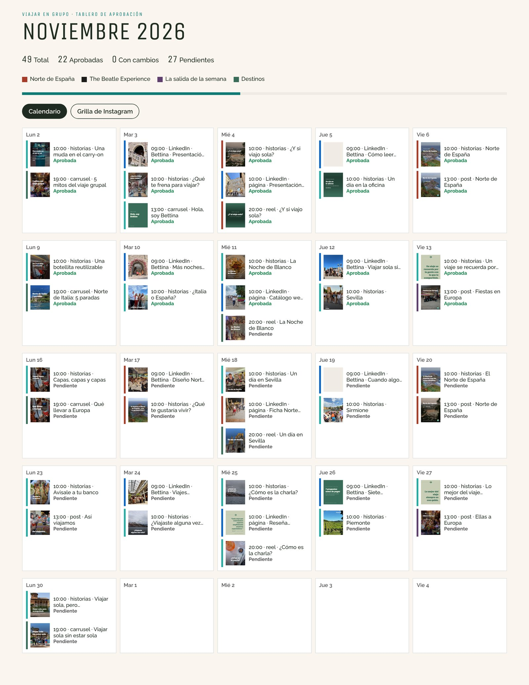
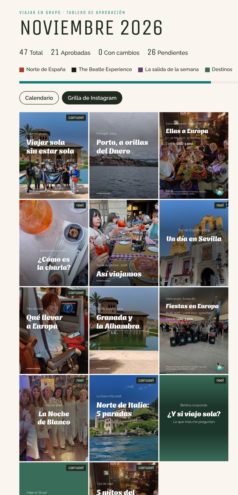
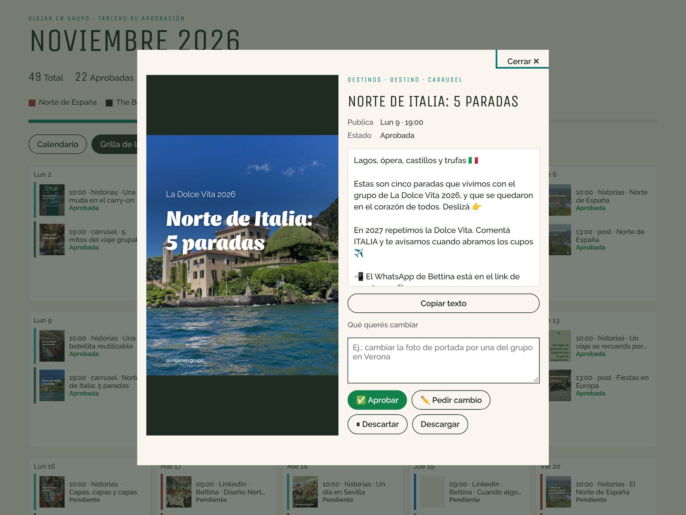
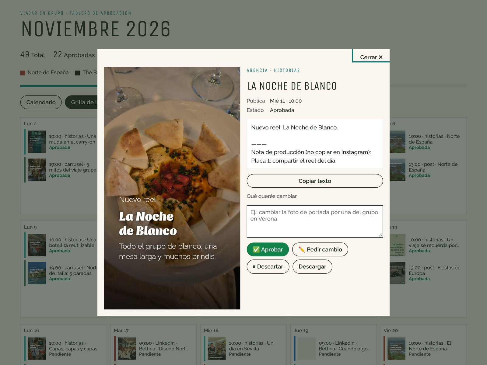

Viajar en Grupo · Resumen del proyecto
Un sistema de agentes de inteligencia artificial que planifica, escribe, diseña y deja listo para publicar el contenido mensual de Instagram y LinkedIn de una agencia de viajes. Una persona lo aprueba desde un tablero web.

1 · De qué se trata
Una agencia chica necesita publicar todos los días para vender sus viajes, pero no tiene un equipo de marketing. Este proyecto reemplaza ese trabajo por un circuito automatizado que produce todo el mes de contenido. Las personas de la agencia solo deciden qué sale.
Cifras tomadas del tablero el 16/11/2026. Además, ya están cargadas 23 piezas de LinkedIn para diciembre y enero, pendientes de aprobación.
2 · Cómo funciona
Todo arranca con un pedido en lenguaje natural ("armá diciembre"). A partir de ahí, un equipo de agentes trabaja en cadena. Cada agente tiene sus propias instrucciones y le pasa un archivo al siguiente.
| Día | Feed | Historias (tema del día) |
|---|---|---|
| Lunes | Post o carrusel, 19:00 | Un tip de viaje |
| Martes | — | Encuesta de destino |
| Miércoles | Reel, 20:00 | Compartir el reel y mostrar cupos |
| Jueves | — | Detrás de escena, con guion para grabar |
| Viernes | Post de venta, 13:00 | Próximas salidas con link |
LinkedIn va aparte: la cuenta personal publica martes y jueves, y la página de la empresa los miércoles.
3 · El tablero mensual
Arriba están los totales por estado y la barra de avance. Debajo va una fila por semana, de lunes a viernes. Cada pieza muestra su miniatura, la hora, el formato y el estado. El color de la izquierda indica a qué programa de contenido pertenece.
Captura del tablero de noviembre 2026 con los datos reales al 16/11.
3 · El tablero mensual

La Grilla de Instagram muestra cómo va a quedar el feed antes de publicar.

Al tocar una pieza se abre el detalle: la vista previa (carrusel deslizable, imagen o video), la ficha con fecha, hora y estado, el texto completo con un botón para copiarlo, y los botones Aprobar, Pedir cambio y Descartar.

Historia aprobada. La "nota de producción" le avisa al equipo qué parte no se puede publicar por API y hay que subir desde el celular.
Es una página web privada publicada en Claude (claude.ai). Las piezas viven en una base de datos compartida que la página lee en vivo, y las imágenes y videos se guardan como archivos del propio tablero. Cuando alguien toca "Pedir cambio", el comentario queda guardado en la pieza, y el sistema lo lee la próxima vez que se le pide "revisá el tablero".
En esta captura de la grilla se ocultaron dos posts del Norte de España que se están corrigiendo.
4 · La conexión con Composio
Composio es una plataforma que conecta agentes de IA con aplicaciones externas, como Instagram, LinkedIn y Gmail. Se ocupa de dos cosas que el agente no debería manejar por su cuenta:
Claude se conecta a Composio por MCP (Model Context Protocol), el estándar con el que un modelo usa herramientas externas. Así, publicar es una llamada a una herramienta con parámetros, sin código de integración propio.
| # | Qué pasa | Herramienta de Composio |
|---|---|---|
| 1 | Se toma la pieza aprobada del tablero y se arma el texto: el posteo más los hashtags, sin la nota de producción. | — |
| 2 | La imagen se convierte a JPEG y se sube al repositorio del proyecto, para tener una URL pública que Instagram pueda descargar. | — |
| 3 | Se crea el "contenedor" de la publicación con la imagen y el texto. En un carrusel se crea uno por lámina y después el contenedor padre. | INSTAGRAM_POST_IG_USER_MEDIA |
| 4 | Se publica el contenedor. | INSTAGRAM_POST_IG_USER_MEDIA_PUBLISH |
| 5 | Se obtiene el link público, que queda guardado en la pieza del tablero junto con la fecha. Esto evita que se publique dos veces. | INSTAGRAM_GET_IG_MEDIA |
Las historias usan las mismas herramientas con el tipo "STORIES". En LinkedIn, la imagen se sube primero al espacio de trabajo de Composio y después se publica con LINKEDIN_CREATE_LINKED_IN_POST.
4 · La conexión con Composio
| Tipo de pieza | Por API (Composio) | Comentario |
|---|---|---|
| Post y carrusel de Instagram | Sí | Imagen en JPEG con una URL pública. |
| Historia de Instagram (imagen) | Sí | Sin stickers. |
| Historia con sticker (enlace, encuesta, música) | No | La API no agrega stickers. Esas placas se suben a mano desde el celular. |
| Compartir otra publicación en historias | No | Se hace desde la app. |
| Reel | Sí, con el MP4 final | Sin el video final no se puede publicar. |
| Etiquetar personas | No | Se hace desde la app. |
| LinkedIn, cuenta personal | Sí | Solo la cuenta autorizada para la marca. |
| LinkedIn, página de la empresa | Todavía no | LinkedIn exige un permiso de administración de páginas que hoy la conexión no tiene. Por ahora se sube a mano. |
| Programar a futuro | No | La API publica en el momento. Para respetar el horario, la publicación se lanza a la hora indicada. |
Entre el 1 y el 16 de noviembre de 2026 se probó un modo automático: una tarea programada publicaba sola lo aprobado en su horario. El 16/11 la agencia decidió pausarlo. Hoy cada publicación se hace a pedido y con confirmación explícita en el chat, después de ver el texto y las imágenes finales.
5 · Detrás de escena
| Parte | Herramienta |
|---|---|
| Agentes e instrucciones | Claude Code, con un archivo de instrucciones por agente y un "skill" que encadena el mes completo |
| Diseño de piezas | Plantillas HTML/CSS con los colores y las tipografías del manual de marca, renderizadas a imagen con un navegador sin interfaz (Playwright) |
| Reels | ffmpeg para cortes, escalado, subtítulos y placa de cierre |
| Código y pruebas | Python, con pruebas automáticas (pytest) del calendario, los formatos, el render y el tablero |
| Tablero de aprobación | Página web privada en Claude, con base de datos compartida y archivos adjuntos |
| Salidas y precios | Base de datos de salidas con fecha de verificación (proyecto en Lovable) |
| Publicación | Composio por MCP, con la API oficial de Instagram y de LinkedIn |
| Historial | Repositorio Git: cada imagen publicada y cada cambio queda versionado |
La IA hace el trabajo repetitivo de todo el mes: investigar, escribir, diseñar, revisar y dejar listo para publicar. La agencia conserva las decisiones: qué se dice, qué precio se muestra y cuándo sale.